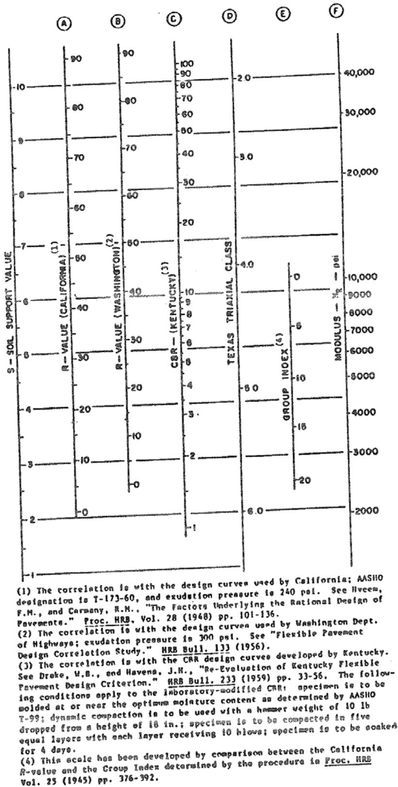
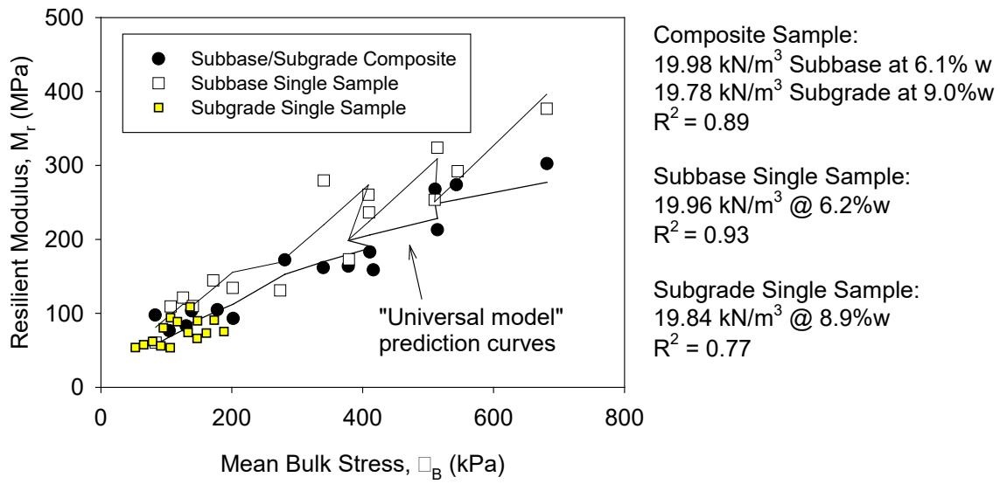
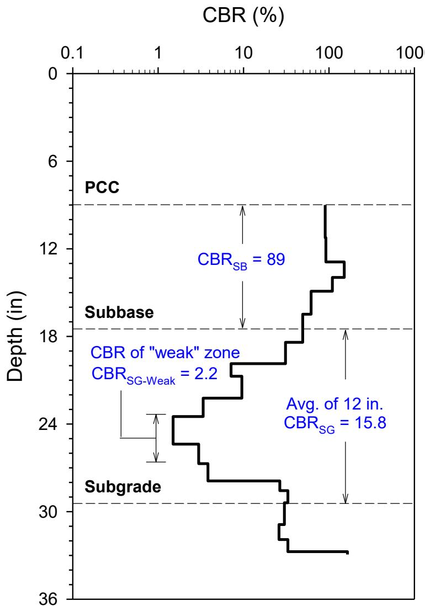
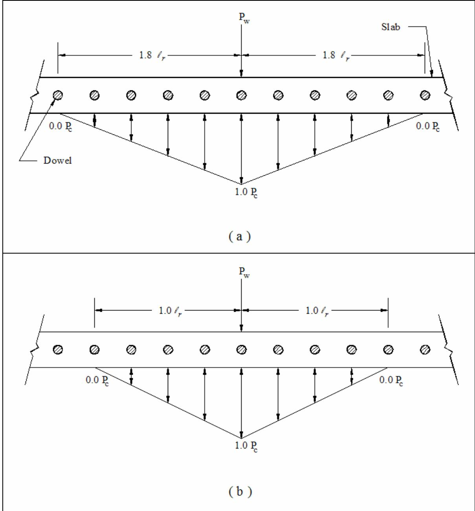
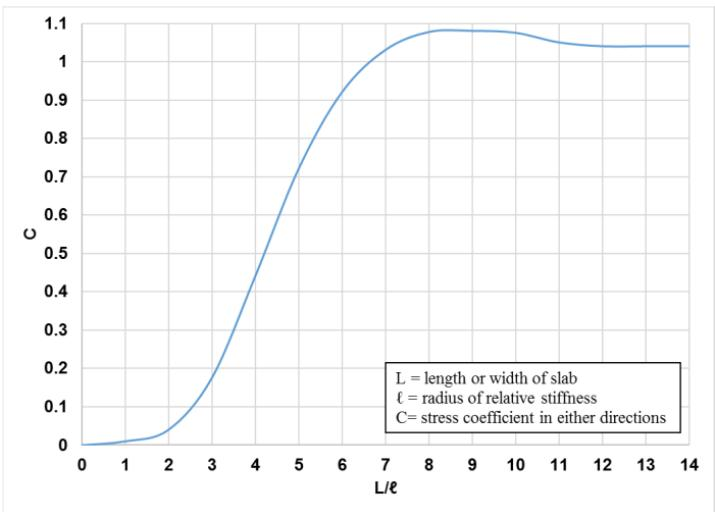
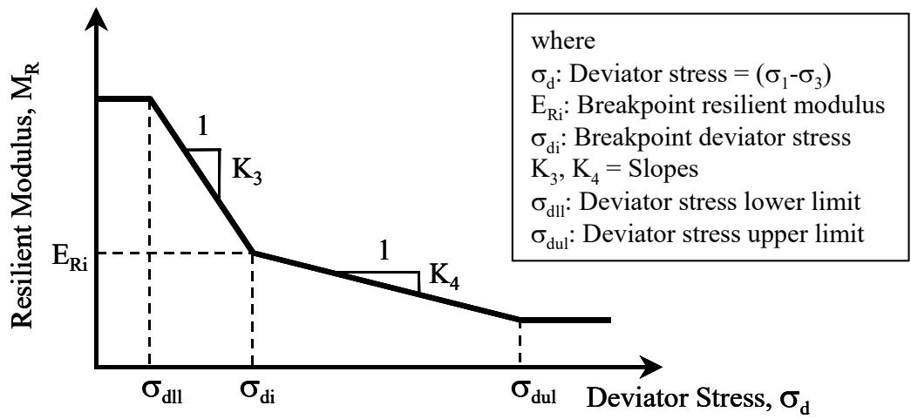
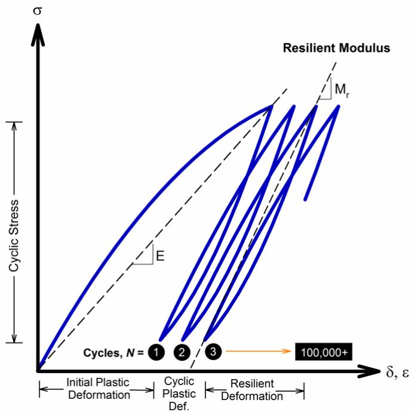
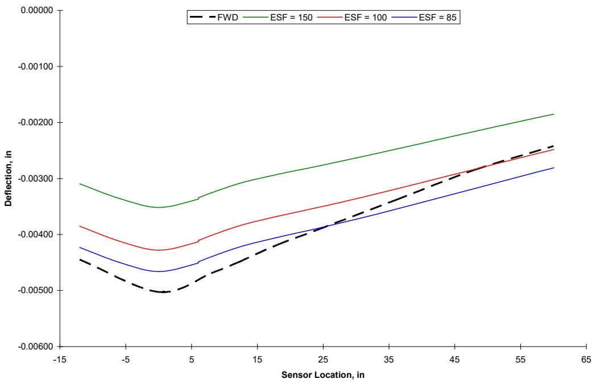

Modulus of Subgrade Reaction
The Modulus of Subgrade Reaction serves as a primary quantitative parameter defining the stiffness of the pavement foundation, acting as a specific measure within Pavement Foundation & Support by relating applied pressure to vertical deflection [10], [11]. Defined as the pressure required to produce a unit deflection at the surface (typically expressed in pci or MPa/m), it functions as the coefficient of subgrade reaction in rigid pavement analysis and represents the proportionality constant between load plate deflection and applied pressure within mechanistic models idealizing the soil subgrade [10], [11]. In pavement foundation studies, the static modulus (Static kFWD-Corr) is determined from falling weight deflectometer (FWD) tests corrected for slab size and dynamic effects. While measured k values often differ from those assumed in SUDAS design procedures, they correlate well with subgrade CBR when the weakest layer within the top 16 inches is used (CBRSG-Weak), albeit with significant variability [1]. The concept extends to composite metrics: the composite modulus represents the combined stiffness of the subgrade and granular subbase layers, whereas the effective composite modulus includes cement-treated base layers. While both assess foundation support via FWD testing, they differ in layer composition and magnitude relative to design assumptions [1], [2].
Sources (14)
Sub-concepts (2)
Introduction to Subgrade Modulus and Reaction
In linear elastic materials such as sands and gravels, modulus values decrease with increasing radial distance from the load center and then level off after a certain distance, where these deformations represent the subgrade modulus. [2]
The Modulus of Subgrade Reaction encompasses the Composite Modulus of Subgrade Reaction, which is specifically applied when a subbase layer is present [1]. This composite variant characterizes the combined stiffness response of both the subgrade and subbase layers rather than evaluating the subgrade soil alone [12]. It serves as a specific parameter derived from field tests to assess this integrated foundation behavior [2].
The Modulus of Subgrade Reaction is expanded to include the Effective Composite Modulus, which integrates the stiffness contribution of cement-treated base layers into the overall support calculation. This composite modulus accounts for the presence of subbase layers and is determined using graphical procedures based on empirical estimates from dynamic cone penetrometer tests [1]. Consequently, design parameters distinguish between the standard subgrade reaction value and the composite value when a stabilizing layer is present [1].
I-96 Subgrade Resilient Modulus
During the I-96 Lansing, MI reconstruction project, the subgrade resilient modulus (Mr) measured in the field significantly exceeded the AASHTO design value, with a field Mr = 31.1 MPa (4,500 psi) compared to a design Mr = 10.3 MPa (1,500 psi), representing a factor of 3× [2]. DCP tests indicated a distinct change in CBR values at approximately 0.5 m depth, suggesting the upper 0.5 m of subgrade was overconsolidated from construction traffic [2]. To study such conditions, laboratory simulations of field conditions often utilize steel supporting beams to replicate specific subgrade stiffness values, such as 145 pci, to test load transfer devices like GFRP dowels; this setup allows for monitoring fatigue performance under simulated truck traffic loads at transverse joints [3].

Chart to estimate resilient modulus (Mr) of subgrade from CBR (from AASHTO 1993 Appendix FF based on results from van Til et al. 1972) [2]
σB versus M_r for subbase and subgrade composite sample [2]Relationship Between k-Value and CBR
- Static kFWD-Corr correlates with CBRSG-Weak (weakest layer in top 16 in.) — consistent with USACE, Thornton (1983), and Darter et al. (1995) literature
- Significant variability exists in k vs. CBR relationships
- A poorly compacted backfill case (Westlawn Dr.) showed that even thick subbase cannot compensate for poor subgrade conditions

Determination of average CBR of top 12 in. of subgrade and CBR of the “weak” layer within the subgrade [1]Modulus of Dowel Support and Joint Mechanics
In mechanistic analysis models for doweled joints, the modulus of subgrade reaction is a required input alongside slab thickness and loaded area radius to evaluate load transfer efficiency [3]. While these models can back-calculate joint material properties and stress load transfer using FWD-measured deflections, they typically ignore environmentally induced responses like curling and warping [3]. When modeling dowels as elastic beams on a cohesionless soil, the subgrade stiffness must be formulated as a function of accumulated damage in the concrete embedment and dowel bar to realistically describe nonlinear response; a single constant modulus value is insufficient because the required support modulus must be adjusted based on the level of applied load even within the global linear range [3]. Furthermore, the formation of a void directly above or beneath the dowel at the face of the joint due to repetitive loading results in a 5% to 10% reduction in load transfer efficiency [4]. For transverse joints containing dowel bars with larger diameters or closer spacing, the joint stiffness increases such that Friberg’s standard distance of 1.8lr is no longer applicable [4].

Load distribution model by Friberg (a), and Tabatabaie (b) [4]The modulus of dowel support, a distinct parameter from the subgrade reaction, represents the reaction per unit area when deflection equals unity and is required for Friberg’s design equations [3]. This modulus (k0) is calculated using the formula k0 = Pt / (b * y), where Pt represents the load carried by the dowel, b is the dowel bar width, and y is the vertical deflection [4]. Experimental values for this parameter vary widely, ranging from 132,790 pci to over 5,000,000 pci depending on the testing method and material properties [3]. Researchers agree that the modulus of dowel support increases with higher concrete strength but decreases as the depth of concrete below the dowel or the dowel bar diameter increases; however, specific design values remain contentious, with recommendations ranging from 300,000 pci to 1,500,000 pci for steel dowels [3]. Additionally, the addition of synthetic macro-fibers at a dosage of 4 lb/yd3 does not significantly affect the rate of joint activation due to their relatively low modulus of elasticity [5].
 Average k0 for heavy elliptical steel dowels [4]
Average k0 for heavy elliptical steel dowels [4]
Deflection, Stress Sensitivity, and Slab Curling
The modulus of subgrade reaction serves as a critical mechanical parameter, influencing various pavement performance metrics and mathematical models. For instance, doubling the soil subgrade modulus from 75 pci to 150 pci resulted in a 40 percent reduction in maximum deflection and generally reduced transverse and longitudinal stresses, though it caused an insignificant 12 percent increase in transverse stress within the asphalt concrete layer [6]. Finite element simulations indicate that slab deformation increases as the modulus of subgrade reaction rises from 30 psi/in to 130 psi/in, but further increases beyond 130 psi/in result in minimal additional changes to slab deformation [7]. Furthermore, the modulus of subgrade reaction influences the degree of slab curling, which is also affected by factors such as drying shrinkage, reinforcement ratio, and joint spacing; specifically, using thin slabs with long joint spacing tends to increase pavement curling [8].
 Multiple linear regression models’ prediction results for non-LTPP sections: (a) curvature IRI, (b) deflection, (c) deflection ratio, (d) degree of curvature [8]
Multiple linear regression models’ prediction results for non-LTPP sections: (a) curvature IRI, (b) deflection, (c) deflection ratio, (d) degree of curvature [8]
The modulus of subgrade reaction is also a key variable in the mathematical definition of the radius of relative stiffness, which is calculated using the slab’s elastic modulus, width, Poisson’s ratio, and the modulus of subgrade reaction [8]. A higher ratio of slab length to radius of relative stiffness (L/ℓ), specifically in the range from 1 to 8, leads to an increase in the stress coefficient for a finite slab [5]. Regarding environmental impacts, Lederle (2014) investigated stress levels in slabs with a modulus of subgrade reaction of 100 psi/in under various environmental and traffic loads, finding that widened slabs are more sensitive to environmental loads due to larger slab size [9]. Additionally, the Second-Generation Curvature Index (2GCI) utilizes the modulus of subgrade reaction as a required mechanical parameter in the Westergaard equation to calculate pseudo strain gradient (PSG), which isolates curling and warping effects from other sources of roughness [8].

Differential curling stress coefficient (C) for different values of the ratio of slab length and radius of relative stiffness (L/ℓ) [5]Modeling Methodologies: Finite Element and Elastic Layer Programs
In finite element modeling of composite pavements using a Winkler foundation idealization, the soil subgrade modulus can be represented by a thin layer of plate elements coinciding with the bottom surface of solid elements rather than defining individual nodal springs, a methodology that allows for efficient simulation of soil support without explicit spring definitions in software like ANSYS [10]. When evaluating subgrade support contribution through effective plate theory, such as when a concrete base is placed over a stabilized base, assumptions must be made regarding bond conditions, including fully bonded, completely unbonded, or partially bonded interfaces between layers [10]. Additionally, the Odemark method of equivalent thickness can transform a two-layered system into a single layer of equivalent thickness to back-calculate subbase modulus using the subgrade modulus [2].
 Plan – Various joint spacing configuration Figure 1. Schematics of the composite pavement (not to scale) [10]
Plan – Various joint spacing configuration Figure 1. Schematics of the composite pavement (not to scale) [10]
Backcalculation of pavement layer moduli using elastic layer programs is highly sensitive to the initial seed modulus input, which requires experienced engineers to interpret results accurately [11]. Finite element programs like ILLI-PAVE incorporate nonlinear, stress-dependent resilient modulus material models where granular materials exhibit stress hardening (modulus increases with stress) and fine-grained soils exhibit stress softening (modulus decreases with stress) [11]. Within these frameworks, the bilinear or arithmetic model is the most commonly used resilient modulus model for subgrade soils, utilizing a breakpoint value (ERi) to classify fine-grained soils as soft, medium, or stiff based on vertical deviator stress [11].

Stress dependency of fine-grained soils characterized by bilinear model [11]Backcalculation Techniques and Neural Networks
Artificial neural network (ANN) models can backcalculate pavement layer moduli from falling weight deflectometer (FWD) deflection basins significantly faster than conventional algorithms, with one study reporting a speed increase of 1,500 to 2,200 times over traditional methods [11]. Furthermore, ANN-based backcalculation models can predict the coefficient of subgrade reaction from FWD deflection basins with very low average absolute error (AAE) values below 0.4% for theoretical, zero-noise synthetic deflection basins [11]; however, the accuracy of backcalculated pavement parameters using neural networks is directly affected by errors in input slab thickness, bonding degree assumptions, and field data noise from sensor calibration or operator mistakes [11].
 ILLI-PAVE-based ANN backcalculation models for flexible pavements [11]
ILLI-PAVE-based ANN backcalculation models for flexible pavements [11]
In contrast, the Barenberg and Ioannides (1989) closed-form backcalculation procedure utilizes the AREA36 parameter, derived from deflections at 0, 12, 24, and 36 inches from the load plate, to determine the radius of relative stiffness and subsequently the modulus of subgrade reaction [12]. This method assumes an infinite slab dimension and requires correction factors for finite slab sizes in overlays with shorter joint spacing [12].
Plate Load Testing and In Situ Measurement
Automated plate load testing (APLT) can measure in situ stress-dependent constitutive models for foundation layers by applying cyclic loads with controlled pulse durations and dwell times to simulate vehicle-loading conditions over a pavement’s service life [13]. By providing more accurate field stiffness values than methods applying only a few dynamic load pulses, cyclic plate load testing addresses a major shortcoming of traditional testing approaches [13]. Furthermore, automated plate load testing eliminates operator bias through machine feedback control systems, ensuring highly repeatable and reproducible modulus measurements without sample preparation or boundary condition errors [13].

Illustration of the parameters measured from APLT cyclic plate load tests. [13]Design Implications for Overlays and Pervious Concrete
For concrete overlays with joint spacing of 6 feet or less, an AREA24 term is used to analyze the deflection basin by considering deflections up to a maximum of 24 inches away from the load plate; this adjustment accounts for the influence of finite slab sizes on the deflection basin, which differs from the infinite slab assumption of standard procedures [12]. During concrete overlay backcalculation, assuming the concrete overlay and underlying bonded asphalt layer act monolithically allows for calculating an effective thickness (heff) of the combined layer, whereas if the layers are unbonded, the backcalculated heff matches only the concrete overlay design thickness while the structural response of the asphalt is captured in the k value [12].
 Single layer assumption for COA overlays [12]
Single layer assumption for COA overlays [12]
Design sensitivity analyses indicate that whitetopping overlay thickness is substantially dependent on the subgrade modulus of reaction, while remaining insensitive to traffic loads exceeding 1 million ESALs [10]. For higher traffic volumes greater than 4 million ESALs, design procedures may prohibit whitetopping specification if the underlying asphalt modulus falls below 400 ksi [10]. Additionally, for pervious concrete pavement systems, the subgrade material should provide good support with modulus of subgrade reaction k values ranging from 150 psi to 175 psi according to the Westergaard modulus method [14].

Deflection comparison for pavement with 4.5″ whitetopping and 9 ft joint spacing [10]Related Concepts
- Composite Modulus of Subgrade Reaction — k with subbase layer contribution
- Falling Weight Deflectometer — FWD test used to measure k
- Dynamic Cone Penetrometer — DCP test used to estimate CBR for k correlation
- Loss of Support — difference between FWD-measured and DCP-calculated k values
- Pavement Foundation & Support
- Effective Composite Modulus of Subgrade Reaction
The loss of support factor is used to account for potential erosion of subbase materials or differential vertical movements beneath the pavement, with AASHTO (1986) defining three specific sizes and shapes of eroded areas to determine these factors. [1]
AASHTO (1993) indicates that a zero-load intercept value greater than 2 mils in falling weight deflectometer tests signifies the presence of a void underneath the pavement slab. [1]
The composite modulus of subgrade reaction (kcomp) can be estimated using a semi-infinite subgrade depth assumption, which is practically defined as a depth greater than 10 feet below the surface. [2]
References
- D. White and P. Vennapusa, "Optimizing Pavement Base, Subbase, and Subgrade Layers for Cost and Performance on Local Roads," Concrete Pavement Technology Center and Center for Earthworks Engineering Research, Ames, IA, Rep. TR-640, 2014. [Online]. Available: https://www.intrans.iastate.edu/wp-content/uploads/2018/03/local_rd_pvmt_optimization_w_cvr.pdf
- D. J. White, P. K. R. Vennapusa, H. H. Gieselman, A. J. Wolfe, A. E. Johnson, R. Franz, and L. Zhao, "Improving the Foundation Layers for Concrete Pavements," National Concrete Pavement Technology Center and CEER, Iowa State University, Ames, IA, Rep. TPF-5(183), 2015. [Online]. Available: https://www.intrans.iastate.edu/wp-content/uploads/2021/01/concrete_pvmt_foundations_lessons_learned_and_framework_for_mechanistic_assessment_w_cvr.pdf
- M. L. Porter and R. J. Guinn, Jr., "Synthesis of Dowel Bar Research / Assessment of Dowel Bar Research," Center for Transportation Research and Education (CTRE), Iowa State University, Ames, IA, Rep. HR-1080, 2002. [Online]. Available: https://www.intrans.iastate.edu/wp-content/uploads/2018/03/dowelbarsynthesis.pdf
- M. L. Porter, J. K. Cable, J. F. Harrington, N. J. Pierson, and A. W. Post, "Field Evaluation of Elliptical Fiber Reinforced Polymer Dowel Performance," PCC Center, Iowa State University, Ames, IA, Rep. DTFH61-01-X-00042 (Project 5), 2005. [Online]. Available: https://www.intrans.iastate.edu/wp-content/uploads/2018/03/frp_dowel.pdf
- J. Gross, D. King, H. Ceylan, Y. A. Chen, and P. Taylor, "Optimized Joint Spacing for Concrete Overlays with and without Structural Fiber Reinforcement," National Concrete Pavement Technology Center, Ames, IA, Rep. TR-698, 2019. [Online]. Available: https://www.intrans.iastate.edu/wp-content/uploads/2019/06/optimized_joint_spacing_for_overlays_w_cvr.pdf
- J. K. Cable, M. L. Anthony, F. S. Fanous, and B. M. Phares, "Evaluation of Composite Pavement Unbonded Overlays: Phases I and II," Center for Portland Cement Concrete Pavement Technology, Iowa State University, Ames, IA, Rep. TR-478, 2003. [Online]. Available: https://www.intrans.iastate.edu/research/completed/evaluation-of-composite-pavement-unbonded-overlays-phase-iii-tr-478-hr-1093-proj-2/
- H. Ceylan, S. Kim, D. J. Turner, R. O. Rasmussen, G. K. Chang, J. Grove, and K. Gopalakrishnan, "Impact of Curling, Warping, and Other Early-Age Behavior on Concrete Pavement Smoothness: EFD Study (Phase II)," Center for Transportation Research and Education, Ames, IA, 2007. [Online]. Available: https://www.intrans.iastate.edu/wp-content/uploads/2018/03/curling_warping-2.pdf
- K. Tian, D. King, B. Yang, S. Kim, A. Alhasan, and H. Ceylan, "Impact of Curling and Warping on Concrete Pavement: Phase II," Program for Sustainable Pavement Engineering and Research (PROSPER), Iowa State University, Ames, IA, Rep. TR-749, 2023. [Online]. Available: https://intrans.iastate.edu/app/uploads/2023/06/Impact_of_Curling_and_Warping_Phase_II_w_cvr.pdf
- H. Ceylan, S. Kim, Y. Zhang, S. Yang, O. Kaya, K. Gopalakrishnan, and P. Taylor, "Prevention of Longitudinal Cracking in Iowa Widened Concrete Pavement," Institute for Transportation, Ames, IA, Rep. TR-700, 2018. [Online]. Available: https://www.intrans.iastate.edu/wp-content/uploads/2018/07/longitudinal_cracking_prevention_in_widened_concrete_pvmt_w_cvr.pdf
- J. K. Cable, F. S. Fanous, H. Ceylan, D. Wood, D. Frentress, T. Tabbert, S. Y. Oh, and K. Gopalakrishnan, "Design and Construction Procedures for Concrete Overlay and Widening of Existing Pavements," Center for Portland Cement Concrete Pavement Technology, Iowa State University, Ames, IA, Rep. TR-511, 2005. [Online]. Available: https://www.intrans.iastate.edu/wp-content/uploads/2018/03/oreo_design.pdf
- H. Ceylan, A. Guclu, M. B. Bayrak, and K. Gopalakrishnan, "Nondestructive Evaluation of Iowa Pavements, Phase 1," CTRE, Iowa State University, Ames, IA, Rep. CTRE 04-177, 2007. [Online]. Available: https://www.intrans.iastate.edu/wp-content/uploads/2018/03/nde-pavements.pdf
- D. King, B. Yang, P. Taylor, and H. Ceylan, "Field Performance of Fiber-Reinforced Concrete Overlays," Institute for Transportation, Iowa State University, Ames, IA, Rep. TR-816, 2025. [Online]. Available: https://www.intrans.iastate.edu/wp-content/uploads/2025/05/field_performance_of_frc_overlays_w_cvr.pdf
- D. J. White and P. Taylor, "Automated Plate Load Testing on Concrete Pavement Overlays with Geotextile and Asphalt Interlayers: Poweshiek County Road V-18," National Concrete Pavement Technology Center, Ames, IA, 2018. [Online]. Available: https://www.intrans.iastate.edu/wp-content/uploads/2018/04/Powashiek_CR_V-18_APL_testing_w_cvr.pdf
- V. R. Schaefer, K. Wang, M. T. Suleiman, and J. T. Kevern, "Mix Design Development for Pervious Concrete in Cold Weather Climates," CTRE, Iowa State University, Ames, IA, 2006. [Online]. Available: https://www.perviouspavement.org/downloads/Iowa.pdf
Feedback on this page